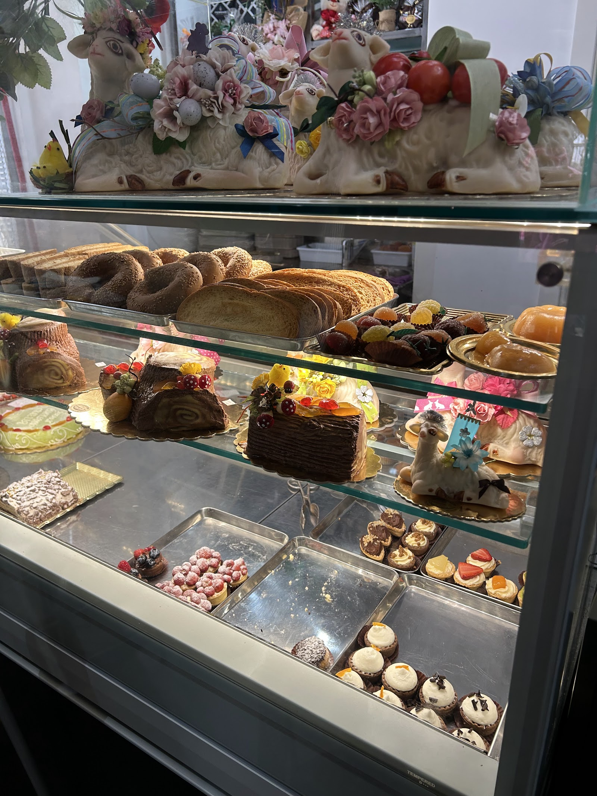
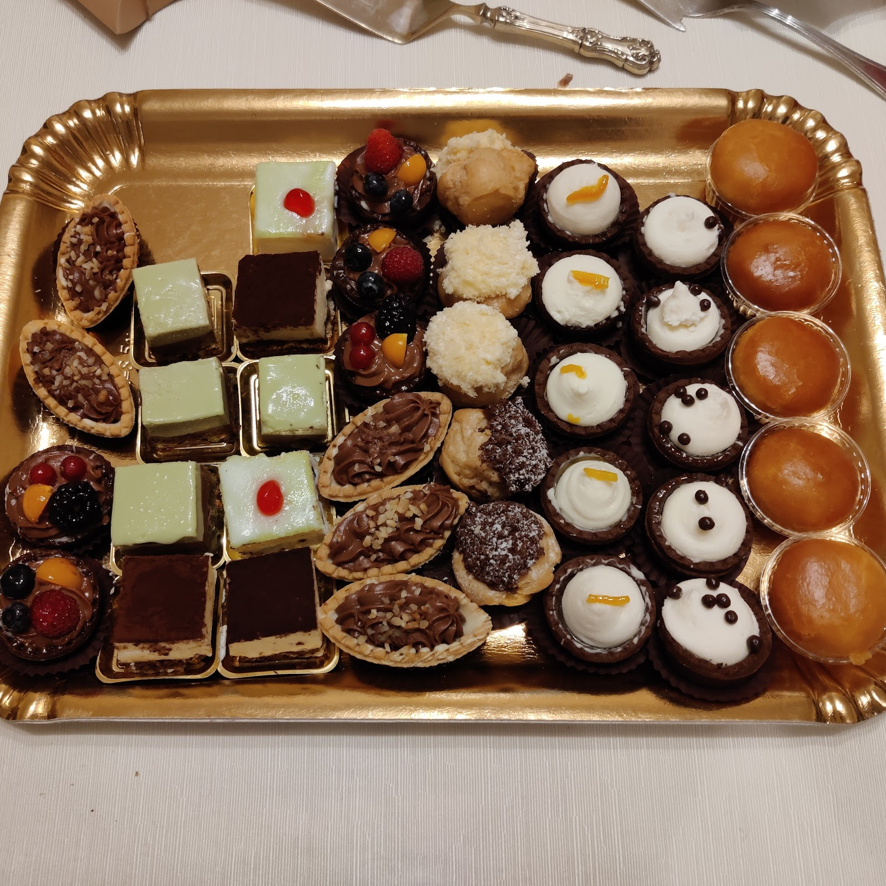
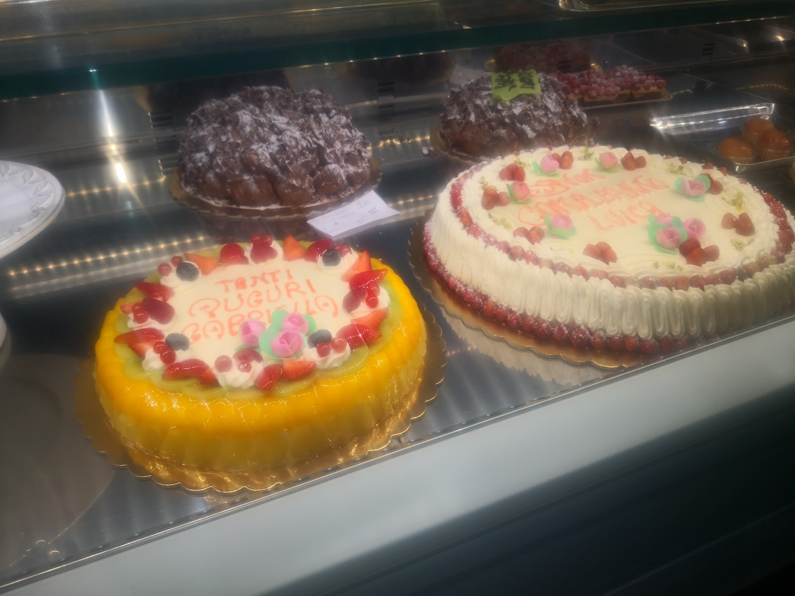
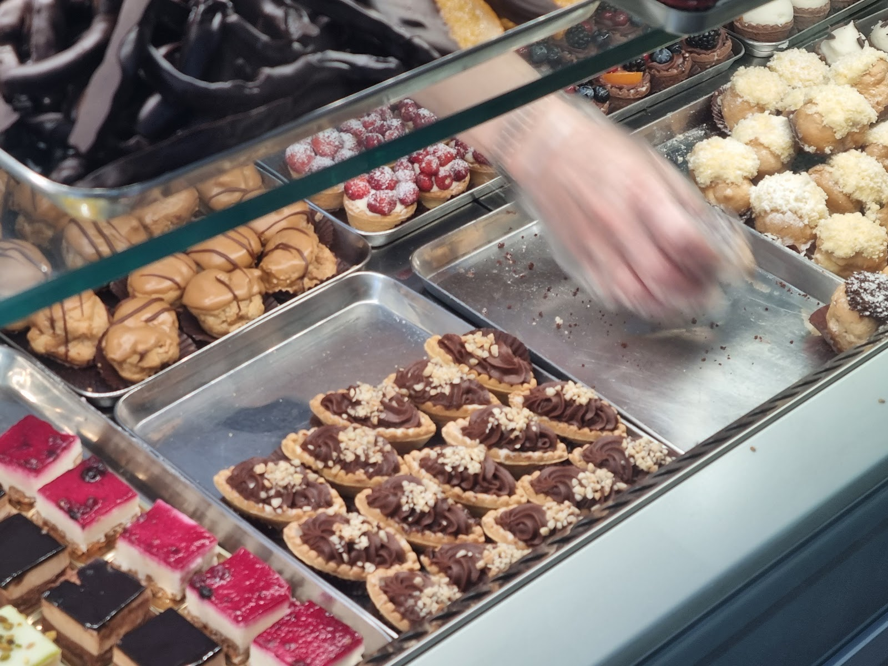
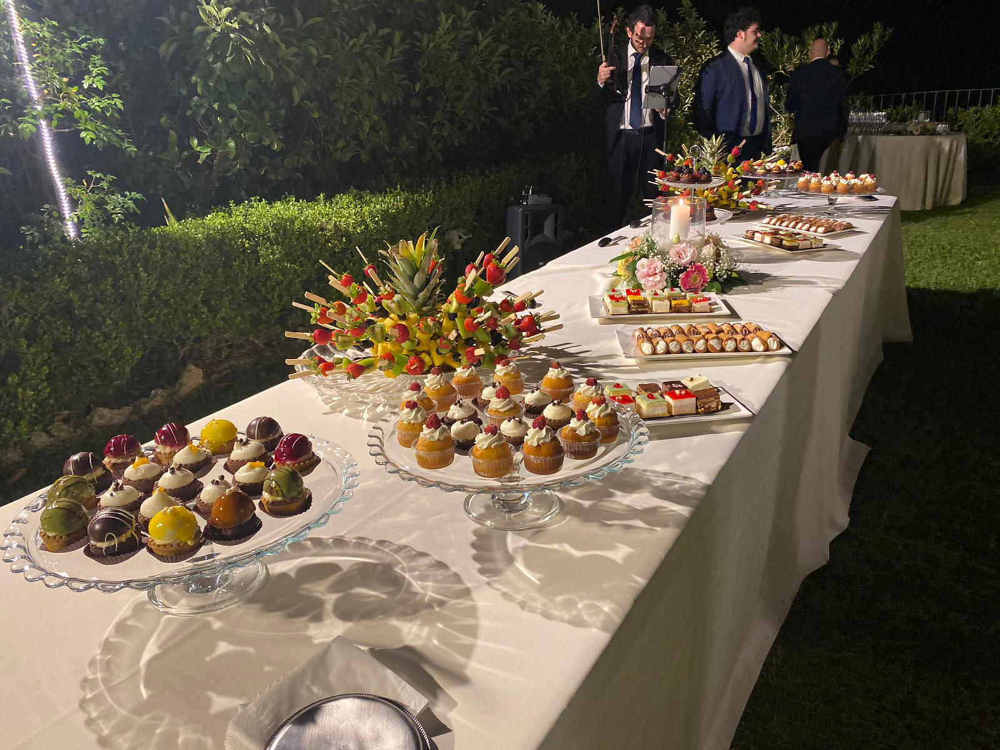
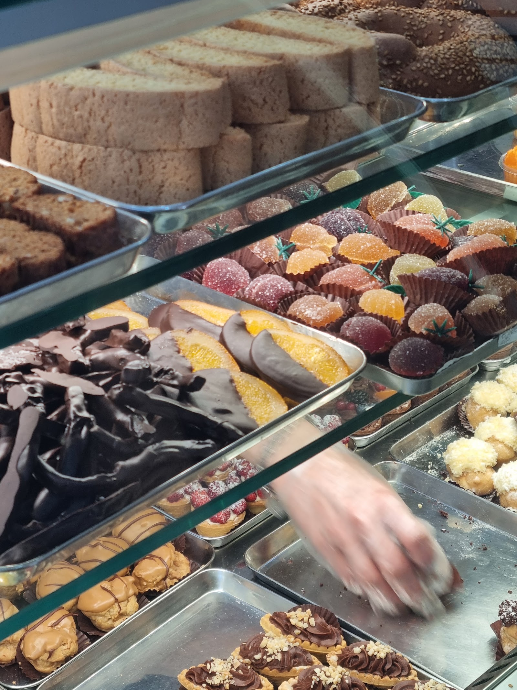

La vetrina siciliana
Cassata, cannoli, pignolata e biscotteria di mandorla: i classici, eseguiti ogni giorno.
Mignon, cassata, setteveli e torte su ordinazione dal laboratorio del maestro Francesco Saccà. Per il vassoio della domenica o per il buffet di un matrimonio — e con consegne in Italia e all’estero.

Tradizione siciliana e pasticceria moderna, preparate in giornata nel laboratorio dietro al banco.

Cassata, cannoli, pignolata e biscotteria di mandorla: i classici, eseguiti ogni giorno.

Setteveli, mimosa, frutta fresca o su disegno: si prenotano al banco o al telefono.

Il vassoio si compone al momento, pezzo per pezzo, davanti a te.
Sweet table, torte cerimonia e mignon per eventi: si definisce il menù insieme, il laboratorio prepara, noi allestiamo. Da Corso Cavour fino alla location.

La Pasticceria del Corso apre nel 2016 su Corso Cavour 173, nel centro di Messina. Il banco cambia con le stagioni, la mano è sempre la stessa: quella del maestro pasticcere Francesco Saccà e della sua squadra.
Su Google ha 4,7 su 5: le recensioni parlano soprattutto dei mignon, della cassata e della granita d’estate.

Su Corso Cavour, nel centro storico di Messina.